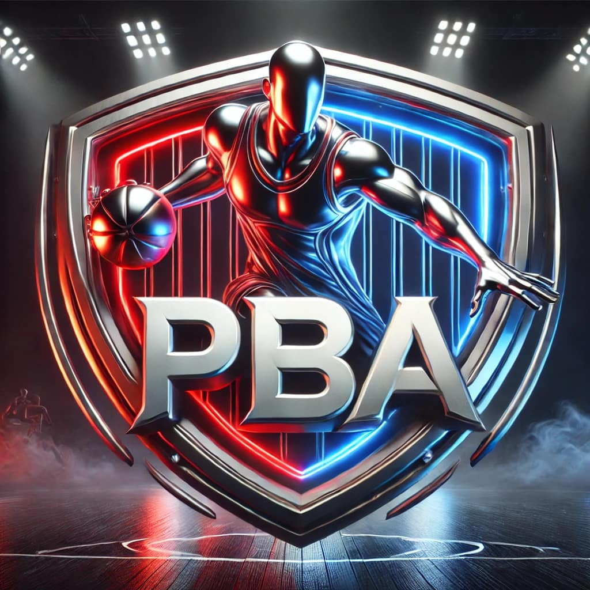
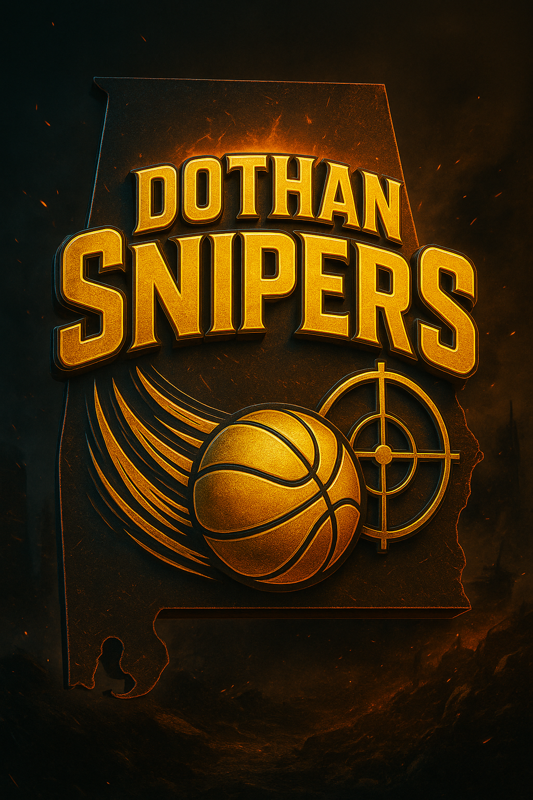

A&T SPORTS INC. / PBA PROGRAMS
DOTHAN
SNIPERS.
These teams have been added on their own page so the homepage can stay centered on the ABA presentation. Dothan Snipers and Columbus Vipers now have a clean, separate presence inside the A&T Sports website.


TEAM PROFILE / DOTHAN
DOTHAN
SNIPERS.
The Dothan Snipers are now separated from the homepage and presented as part of the dedicated PBA side of the website. This makes the league distinction clear while still keeping the branding tied back to A&T Sports.
LeaguePBA
MarketDothan, AL
Website StatusProfile Live